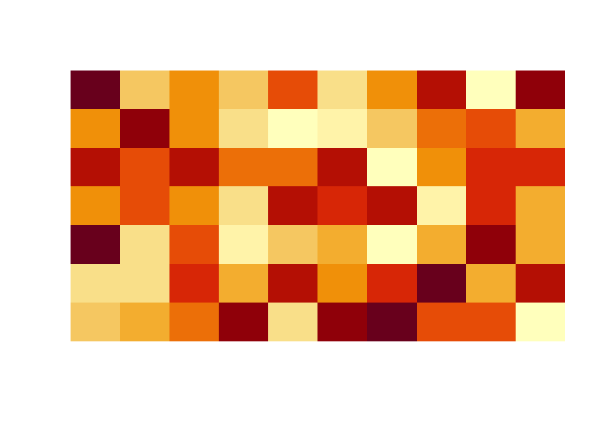

Exercise 3 Matrices, Arrays, Data frames
3.1 Lecture slides
3.2 Matrices
Use the code below to create the vector uniform.values.
set.seed(21)
uniform.values <- runif(50)
uniform.values [1] 0.78611493 0.25244560 0.69925230 0.18446075 0.95961383 0.91868340
[7] 0.10180455 0.17219168 0.98600368 0.84939610 0.66754012 0.93521022
[13] 0.05818433 0.61861583 0.17491846 0.03767539 0.52531317 0.28218425
[19] 0.49904520 0.63382510 0.01139965 0.60785656 0.77559853 0.92397118
[25] 0.29170673 0.78907624 0.56849721 0.77843508 0.71323253 0.66904867
[31] 0.93470991 0.50646019 0.74506019 0.83835263 0.86907475 0.19311168
[37] 0.21633194 0.65042346 0.33516604 0.50765589 0.65283937 0.96557667
[43] 0.51466067 0.06165677 0.15101646 0.63556589 0.10296050 0.77269430
[49] 0.41022537 0.87023337- Arrange data in
uniform.valuesaccording to the following formats:
single row matrix.
single column matrix
matrix \(5 \times 10\)
matrix \(10 \times 5\)
- Write the code to output the following matrix.
[,1] [,2] [,3] [,4] [,5] [,6] [,7]
a 0.7861149 0.2524456 0.6992523 0.1844608 0.9596138 0.9186834 0.1018046
b 0.7890762 0.5684972 0.7784351 0.7132325 0.6690487 0.9347099 0.5064602
[,8] [,9] [,10] [,11] [,12] [,13] [,14]
a 0.1721917 0.9860037 0.8493961 0.6675401 0.9352102 0.05818433 0.6186158
b 0.7450602 0.8383526 0.8690747 0.1931117 0.2163319 0.65042346 0.3351660
[,15] [,16] [,17] [,18] [,19] [,20] [,21]
a 0.1749185 0.03767539 0.5253132 0.2821842 0.49904520 0.6338251 0.01139965
b 0.5076559 0.65283937 0.9655767 0.5146607 0.06165677 0.1510165 0.63556589
[,22] [,23] [,24] [,25]
a 0.6078566 0.7755985 0.9239712 0.2917067
b 0.1029605 0.7726943 0.4102254 0.8702334- Matrix visualization: The matrix
mcontains 70 randomly generated values from the \(Unif(0, 1)\) distribution. The R functionimageis used to visualize the matrix.
set.seed(1)
values <- runif(70)
m <- matrix(values, 10, 7)
m [,1] [,2] [,3] [,4] [,5] [,6] [,7]
[1,] 0.26550866 0.2059746 0.93470523 0.4820801 0.8209463 0.47761962 0.91287592
[2,] 0.37212390 0.1765568 0.21214252 0.5995658 0.6470602 0.86120948 0.29360337
[3,] 0.57285336 0.6870228 0.65167377 0.4935413 0.7829328 0.43809711 0.45906573
[4,] 0.90820779 0.3841037 0.12555510 0.1862176 0.5530363 0.24479728 0.33239467
[5,] 0.20168193 0.7698414 0.26722067 0.8273733 0.5297196 0.07067905 0.65087047
[6,] 0.89838968 0.4976992 0.38611409 0.6684667 0.7893562 0.09946616 0.25801678
[7,] 0.94467527 0.7176185 0.01339033 0.7942399 0.0233312 0.31627171 0.47854525
[8,] 0.66079779 0.9919061 0.38238796 0.1079436 0.4772301 0.51863426 0.76631067
[9,] 0.62911404 0.3800352 0.86969085 0.7237109 0.7323137 0.66200508 0.08424691
[10,] 0.06178627 0.7774452 0.34034900 0.4112744 0.6927316 0.40683019 0.87532133image(m, useRaster=TRUE, axes=FALSE)
Record the values in the matrix (m) as follows: matrix value = 0 if value lessthan 0.5 and 1 otherwise. Write an R code to visualize the new matrix.
Consider the matrix
ymatgiven below. Convert all even index position values to 0 and odd position values to 1.
[,1] [,2] [,3] [,4] [,5] [,6] [,7] [,8] [,9] [,10]
[1,] 10 110 210 310 410 510 610 710 810 910
[2,] 20 120 220 320 420 520 620 720 820 920
[3,] 30 130 230 330 430 530 630 730 830 930
[4,] 40 140 240 340 440 540 640 740 840 940
[5,] 50 150 250 350 450 550 650 750 850 950
[6,] 60 160 260 360 460 560 660 760 860 960
[7,] 70 170 270 370 470 570 670 770 870 970
[8,] 80 180 280 380 480 580 680 780 880 980
[9,] 90 190 290 390 490 590 690 790 890 990
[10,] 100 200 300 400 500 600 700 800 900 1000Help:
5 %% 2[1] 16 %% 2[1] 0- Visualize the resulted matrix using the
imagefunction. Your output should look like this:
3.3 Array
- Write R codes to create the following arrays.
, , Matrix1
COL1 COL2 COL3
ROW1 1 10 13
ROW2 2 11 14
ROW3 3 12 15
, , Matrix2
COL1 COL2 COL3
ROW1 1 10 13
ROW2 2 11 14
ROW3 3 12 15, , 1
[,1] [,2] [,3]
[1,] 2 4 6
[2,] 3 5 7
, , 2
[,1] [,2] [,3]
[1,] 8 10 12
[2,] 9 11 133.4 List
- Create a list store the built-in dataset
irisdataset and “scatterplot ofSepal.WidthandSepal.Length.”
3.5 Dataframe
There are several datasets, which comes with R installation. For example iris, mtcars and ,any more. In this exercise we will work with the mtcars dataset in R.You may refer to the help page ?mtcars for more details about the dataset.
Use suitable R functions for quick exploration of data. Help:
str,head,tail,dim,nrow,ncol.What happens when you call
View()onmtcars?Write an R code to extract column names and row names.
Extract and display the column corresponding to the number of cylinders.
Extract and display the observations of cars with 4 cylinders AND 4 gears.
What is the maximum
mpg?Which car has the maximum
mpg?Compute suitable summary statistics for each column.